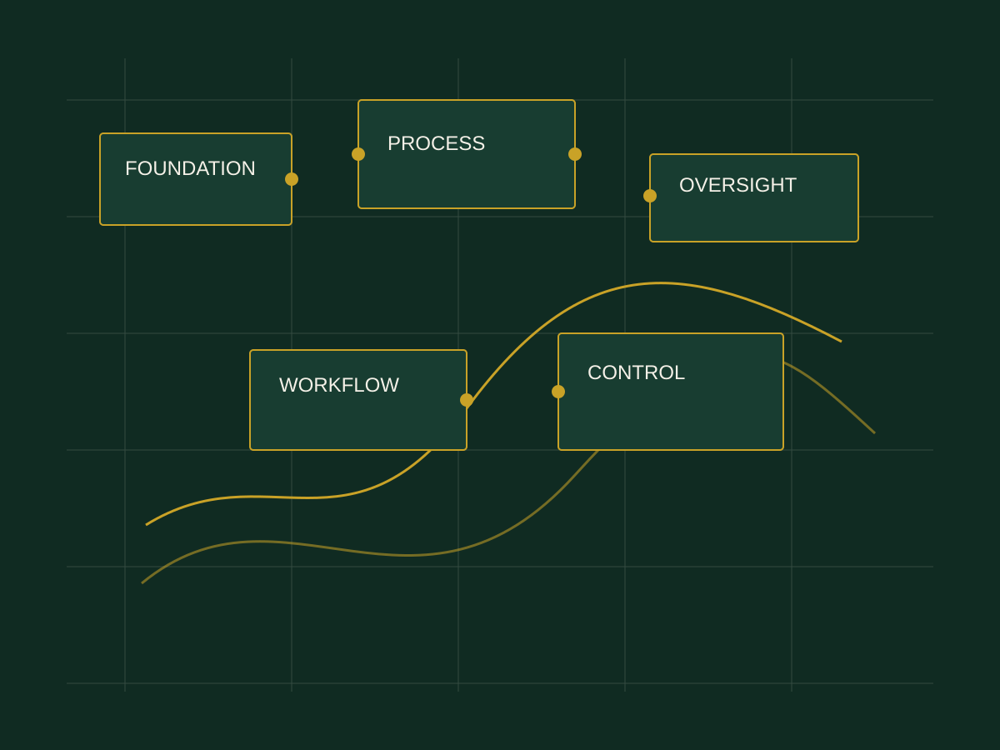

Everything depends on the founder.
Decisions, approvals and knowledge all return to one person.
BUSINESS SYSTEMS • STRATEGY • IMPLEMENTATION
We help businesses build the structures, processes and oversight systems that turn daily chaos into an organisation that can actually run.

THE REALITY
Decisions, approvals and knowledge all return to one person.
Work overlaps, accountability disappears and important tasks fall through.
When someone leaves, consistency leaves with them.
More customers and more staff expose structures that were never built to scale.
OUR CORE FRAMEWORK
We focus on the parts of a business that allow good work to happen consistently—not only when the founder is watching.
FOUNDATION
Roles, responsibilities, reporting relationships and accountability should not be assumed. We make them visible.
WHAT WE BUILD
BUSINESS STRUCTURE
What it solves: Confusion about responsibility, reporting and decision-making.
What we build: Organisational structures, role definitions, accountability and reporting structures.
What changes: People know what they own—and leadership knows where accountability sits.
HOW WE WORK
Before building anything, we examine the current reality: how work moves, where decisions sit, what depends on whom and where friction appears.
WHO WE HELP
We work with founder-led, growing, service and small businesses—and others facing operational complexity. These are not limits; they are common moments when structure becomes urgent.
BEFORE
AFTER
WHY WE EXIST
They struggle because the business grows faster than the systems supporting it.
“Everything is in my head.” → “Everything has a system.”
OUR MISSION
OUR VISION
THE PERSON BEHIND THE ROOM
The Strategy Room was established around a simple observation: a business can become busy long before it becomes structured.
Norah's role in building The Strategy Room is rooted in that question—how do you help a founder move the business from memory, constant supervision and individual dependency toward clearer structures and practical systems?
That philosophy sits at the centre of the room.
INTERACTIVE MINI-DIAGNOSTIC
Answer five quick questions. No personal information required.
READY WHEN YOU ARE
Let's identify what your business needs to operate better—and build it.